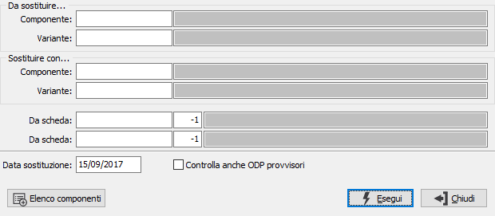
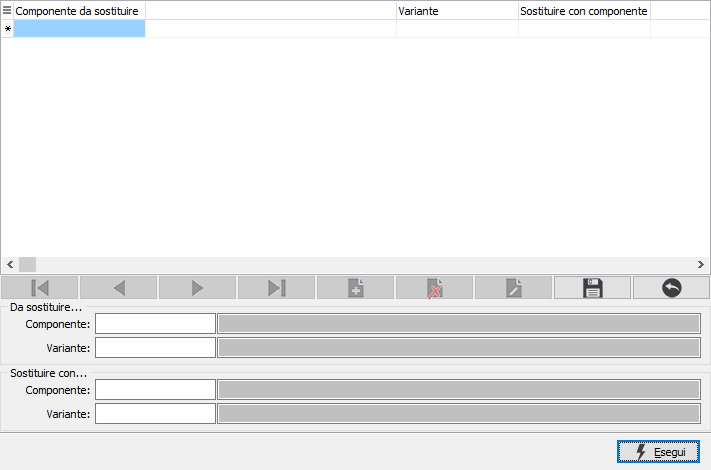

Sostituzione componenti
Il programma consente la sostituzione di un componente in tutte le schede tecniche in cui è presente. Al momento in cui viene effettuata l’operazione di sostituzione viene generata una nuova revisione della scheda tecnica.

Vengono richiesti il componente da sostituire ed il componente da utilizzare per la sostituzione, i limiti si possono riferire ad un gruppo di schede e la data di sostituzione viene utilizzata come parametro per la validità delle schede da elaborare; se viene spuntata la casella Controlla anche ODP provvisori saranno esaminate anche le schede riferite ad ODP provvisori, altrimenti solo quelle relative ad ODP definitivi, oltre le schede non movimentate.
Nel caso si voglia effettuare la sostituzione di più componenti contemporaneamente si può utilizzare il pulsante a lato; si apre la finestra mostrata sotto dove inserire componenti multipli analogamente a quanto presente nella finestra principale per un singolo componente; se erano stati inseriti dei limiti di sostituzione sulla finestra principale questi saranno eliminati previa richiesta di conferma; la pressione del pulsante Esegui riporta alla finestra principale da cui sarà possibile avviare la sostituzione.
